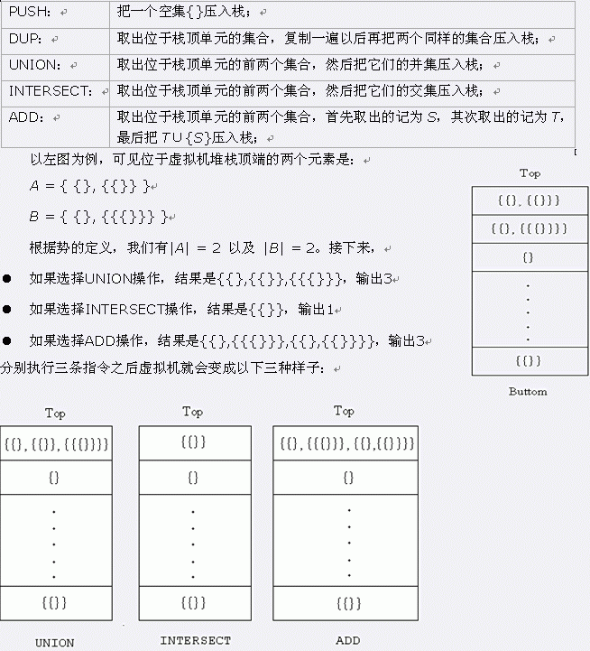

中学数学里集合的元素往往是具体的数字，比如 $A = \{1,2,3\}$，$B = \{\}$（空集）等等。但是要特别注意，集合的元素也可以是另一个集合，比如说 $C = \{\{\}\}$，即说明 $C$ 有且仅有一个元素——空集 $B$，所以称 $B$ 是 $C$ 的子集或者称 $B$ 是 $C$ 的元素都是正确的。所谓一个集合的势，就是这个集合的元素个数，一般记为 $|S|$，空集的势为 $0$。在上例中，$|A| = 3$，$|B| = 0$，$|C| = 1$。 鉴于集合论是现代数学的基础理论这一事实，一群异想天开的科学家开始着手建造一台新式的超级计算机——集合堆栈机 Alpha，这台机器操作的将是集合而不是数字。不过由于 Alpha 的竣工之日遥遥无期，科学家们希望你为他们编写一台虚拟机，好让他们检查自己的原型设计是否合理。 Alpha 的存储设备只有一个栈，栈的每个单元都只能放置一个集合。一开始，栈是空的，在每个操作结束后，计算机就会输出位于栈顶单元的那个集合的势。Alpha拥有五种不同的指令，分别为：PUSH、DUP、UNION、INTERSECT和ADD，他们的功能如下：

 Comet OJ
Comet OJ